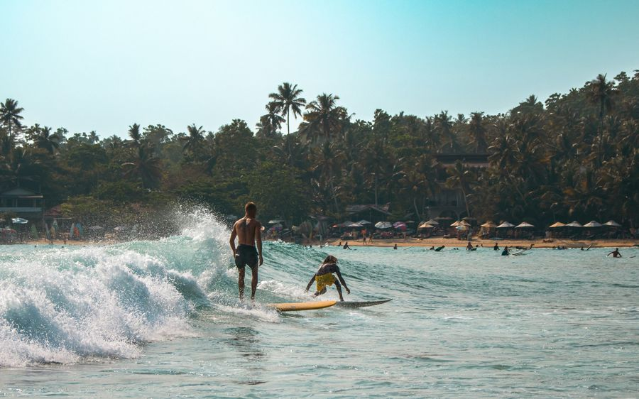

1Surfing the bay
One of the best places in Sri Lanka to learn. Facing the sea, the soft beach break on your right is where the schools take beginners; the fast left over the reef at the other end is for experienced surfers only. Board hire and lessons are all along the sand.
From townIn the bay
OpenDec–Mar best · mornings
Give it2 hours a session
EffortBeach break: beginner · reef: advanced
TicketBoard ≈ LKR 1,000–2,000/hr · lesson ≈ LKR 4,000–6,000
Good to knowThe reef end is sharp and full of sea urchins — wear reef booties, and stay on the beach break until you can turn. The line-up gets crowded from December to March, so paddle out at dawn.